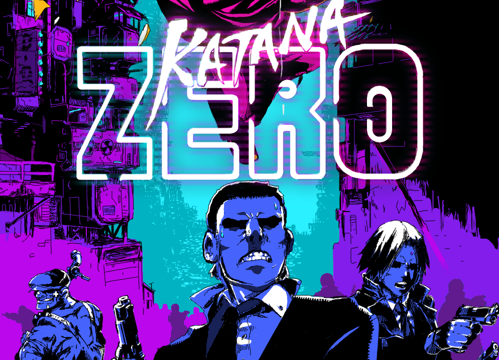

Hollow Knight üèÜ

Hollow Knight es un videojuego de acción y aventura donde exploras el misterioso reino subterráneo de Hallownest. Con un diseño artístico dibujado a mano y una jugabilidad [...]
Para descargar Hollow Knight, utiliza el siguiente enlace:
Descargar Hollow Knight.
Celeste ❄️

Celeste es un videojuego de plataformas con una historia emocional. Ayuda a Madeline a superar sus desafíos en una montaña llena de peligros y secretos.
Para descargar Celeste, utiliza el siguiente enlace:
Descargar Celeste.
Hyper Light Drifter ⚡

Hyper Light Drifter es un juego de acción isométrica con un impresionante pixel art. Explora un mundo vasto y misterioso mientras luchas contra enemigos y descubres secretos.
Para descargar Hyper Light Drifter, utiliza el siguiente enlace:
Descargar Hyper Light Drifter.
Katana ZERO üî™

Katana ZERO es un juego de acción rápida con mecánicas de manipulación del tiempo. Enfréntate a enemigos y resuelve situaciones con precisión y estrategia.
Para descargar Katana ZERO, utiliza el siguiente enlace:
Descargar Katana ZERO.
Call of Duty: Black Ops 2 üî´

Call of Duty: Black Ops 2 es un juego de disparos en primera persona con una campaña emocionante y un modo multijugador muy popular.
Para descargar Call of Duty: Black Ops 2, utiliza el siguiente enlace:
Descargar Call of Duty: Black Ops 2.
GTA Vice City üöó
GTA Vice City es un juego de acción y aventura en un mundo abierto. Explora la ciudad de Vice City mientras completas misiones y te involucras en actividades delictivas.
Para descargar GTA Vice City, utiliza el siguiente enlace:
Descargar GTA Vice City.
God of War 1 ⚔️
God of War 1 es un juego de acción y aventuras mitológicas. Acompaña a Kratos en su búsqueda de venganza contra los dioses del Olimpo.
Para descargar God of War 1, utiliza el siguiente enlace:
Descargar God of War 1.
Mortal Kombat 9 ü•ã

Mortal Kombat 9 es un juego de lucha con combates brutales y movimientos especiales. Enfréntate a tus amigos o a la IA en épicos duelos.
Para descargar Mortal Kombat 9, utiliza el siguiente enlace:
Descargar Mortal Kombat 9.
The Forest üå≤
The Forest es un juego de supervivencia y horror. Explora una isla misteriosa, construye refugios y enfréntate a criaturas aterradoras.
Para descargar The Forest, utiliza el siguiente enlace:
Descargar The Forest.
Resident Evil 5 üßü
Resident Evil 5 es un juego de acción y horror donde enfrentas hordas de zombis y criaturas mutantes. Juega solo o en modo cooperativo.
Para descargar Resident Evil 5, utiliza el siguiente enlace:
Descargar Resident Evil 5.